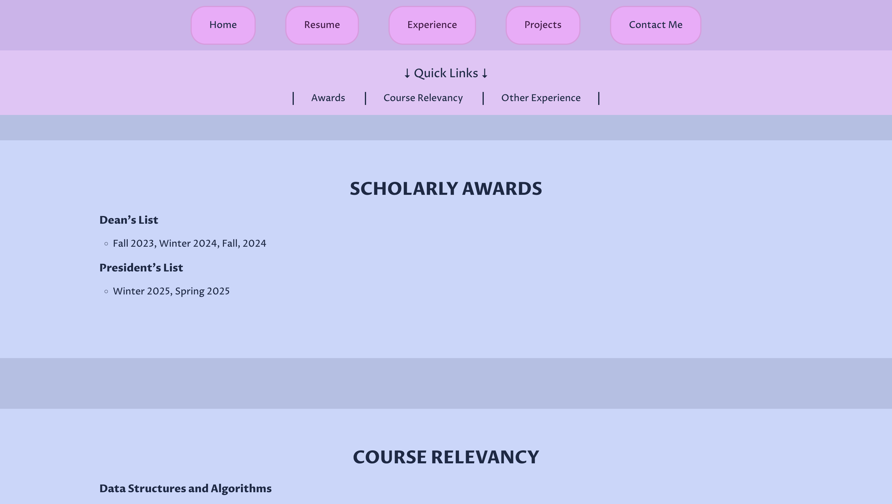
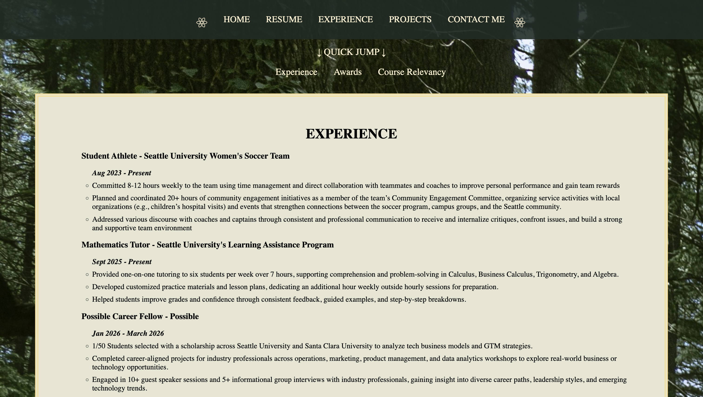

PERSONAL BRAND SITE REDESIGN
Project Overview
This project refreshed the original portfolio experience to better communicate strengths, showcase work, and improve navigation flow across resume, projects, and contact pathways. It was also a great excuse to have it reflect more of my personality and design style. I wanted to create a fantasy-game like aesthetic with a color palette inspired by nature and old books, and typography that felt whimsical yet readable. If you couldn't yet tell, my favorite color is green!
My Process
- Redesigned the portfolio aesthetic to be more cohesive and visually engaging with the goal to reflect a fantasy-game like style.
- Audited the original structure with stronger section labels and placement. Some examples include:
- Finally implemented the 'Projects' page!
- Adjusted responsive spacing and typography for better mobile experience.
- Placed navigation items closer together for better visibility and accessibility.
- Restructuring the 'Experience' page to better meet user interests by placing relevant experiences first instead of last.
- For pages that require scrolling, I implemented smoother scrolling behavior in addition to a 'back to top' button.
- Created a card-based layout that highlights each project with a visual preview, role and tools used, and links to the project details.
- Designed each project detail page to display comprehensive information about the project, including necessary pictures and links.
- I designed the 'Projects' page to be a storytelling hub, so users can scan at a glance or dive deep into each project.
Final Outcome
I'm super proud of this redesign and the new 'Projects' page! Its updated layout now supports project storytelling with consistent cards, clearer role/tool context, and direct links to outcomes and details. Overall, the other pages remained similar to the original structure, but the new design is more cohesive and visually engaging. The navigation flow has been improved across resume, projects, and contact pathways, making it easier for users to find what they're looking for. Overall, this redesign has significantly enhanced the user experience of my portfolio website, and was extremely fun to do.
There is always room for improvement regarding code maintainability and efficiency, but for my first major website design, I'm quite happy with the results!
Project Links




